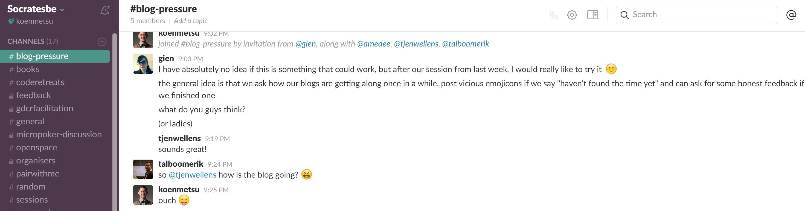
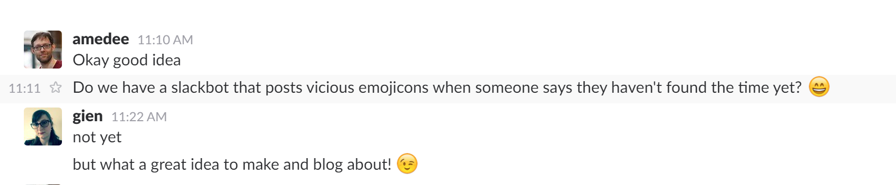

SoCraTes Slack Bot Pet Project
Why?
Software Craftsmanship and Testing
It's about
People
It's about
Action
It's about
Fun
Why??

Why???

Enter Socrates
Socrates' Principles
Opt-in
"Remind me to blog" + time
Glory or Shame
DING, DING
Technically
Node.js
BotKit, Chrono and some json
Run on local server
Things I'd like to improve
Testability
Help?
Hosting
Cheap cloud (Lambda, Azure, ...)
Help?
Continuous Deployment
(To said cheap cloud)
Help?
Thank you
Follow
@koenmetsu